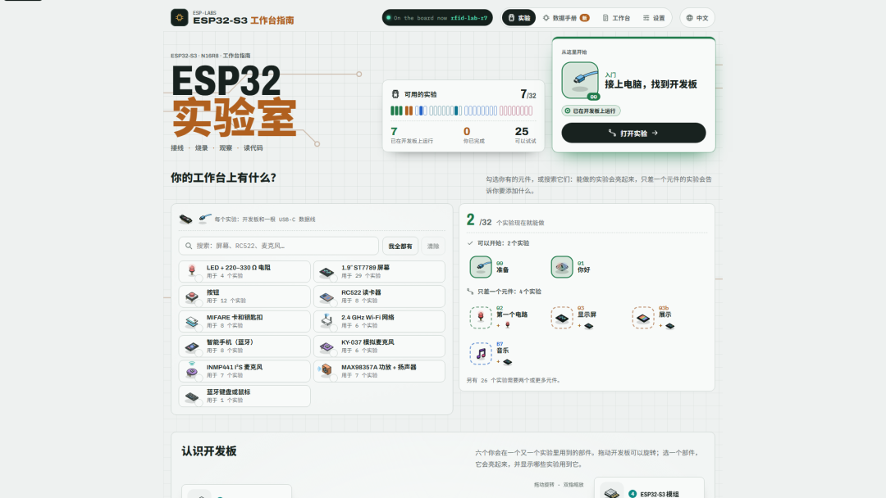
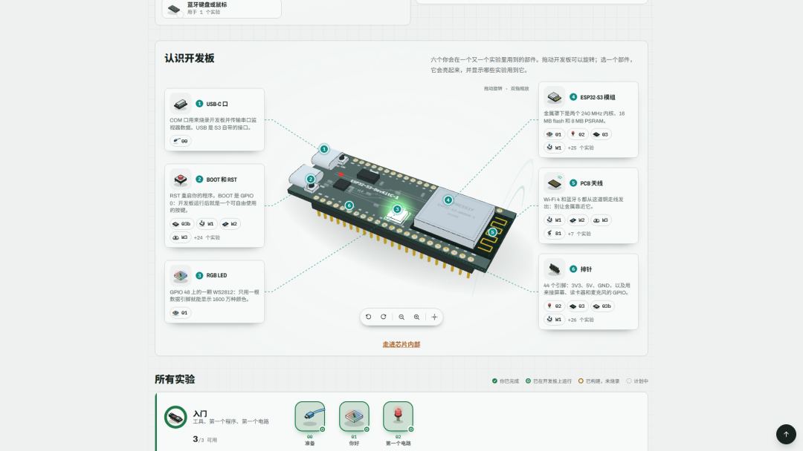
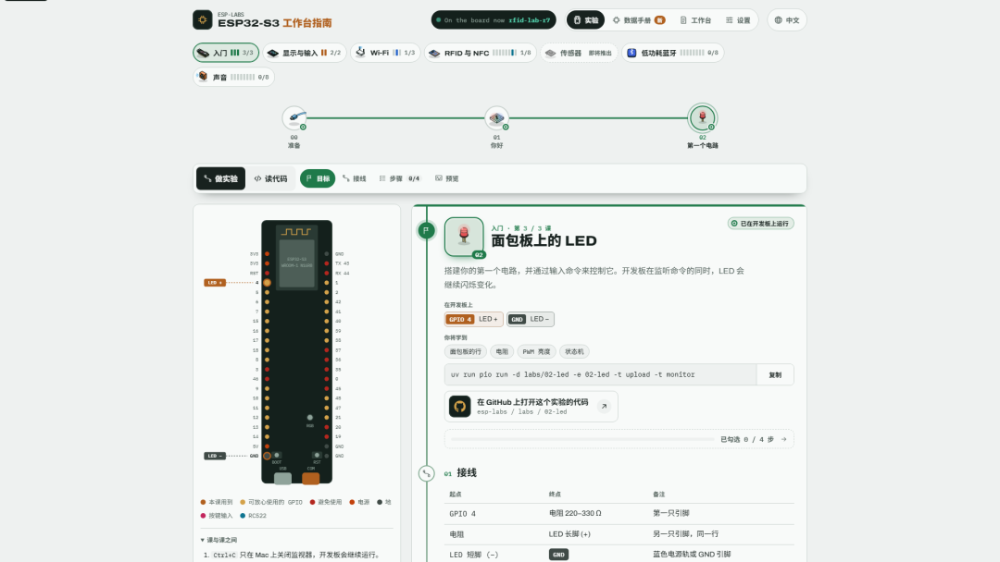
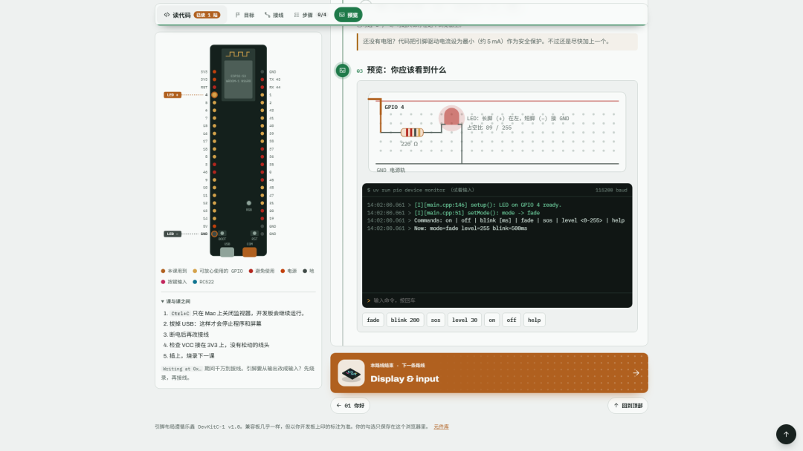
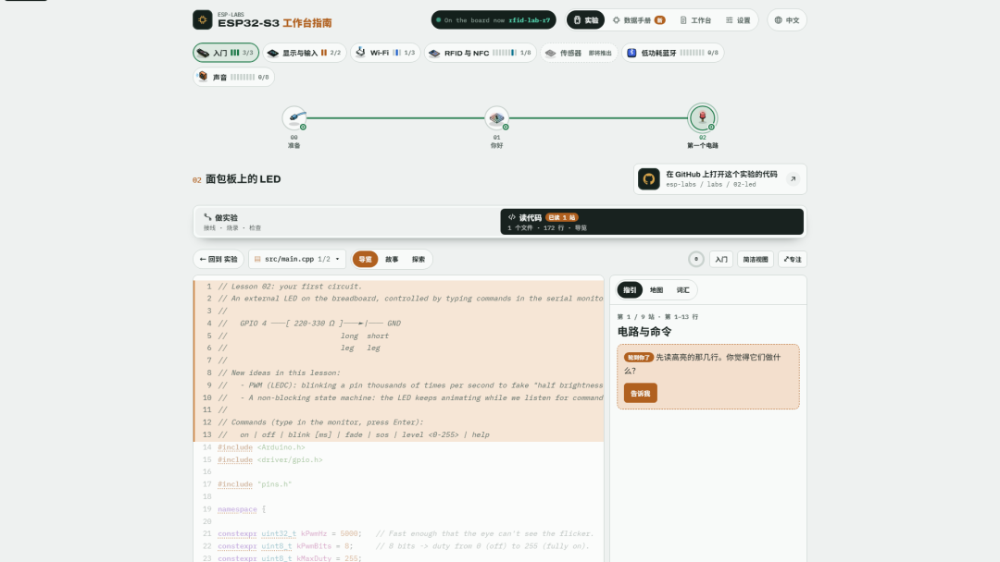
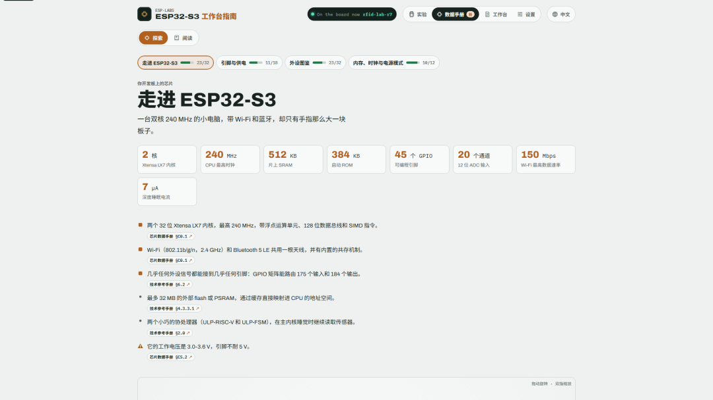
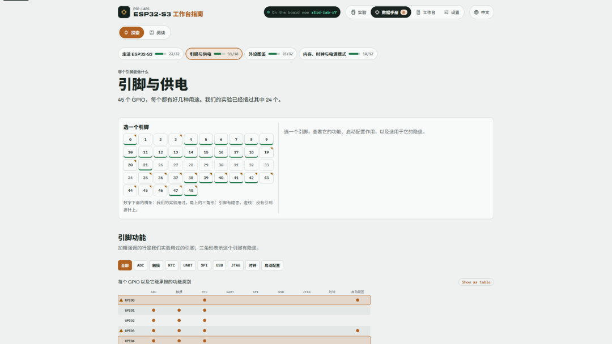
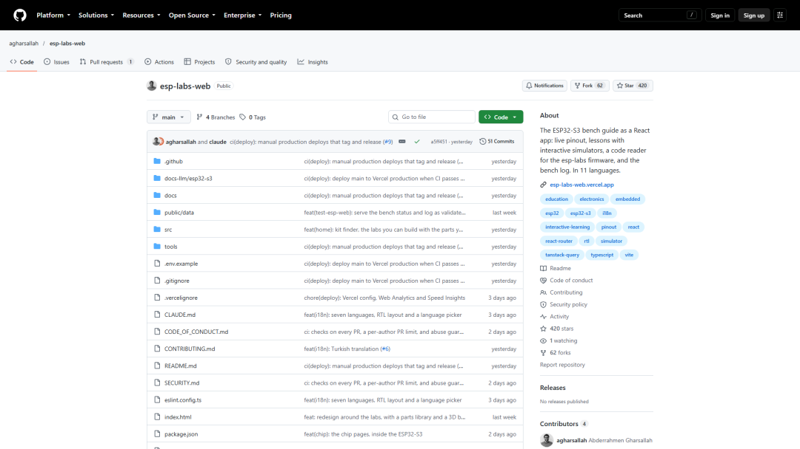

玩嵌入式的人都懂那种"摸黑调试"的痛苦：开发板、屏幕、传感器摊了一桌子，面包板插线乱成一团，固件烧进去没反应——是线接错了？引脚配错了？还是代码逻辑有问题？你只能逐个排除，而每一步都要拧螺丝、插跳线、重新烧录。
最近登上 GitHub 热榜的开源项目 ESP Labs（esp-labs-web），给了这个问题一个相当激进的答案：把整块 ESP32-S3 开发板和全部 32 个实验，原样搬进浏览器。接线、烧录、看现象、读源码，全部在网页里完成，等你真正拿起开发板时，整个流程你已经跑过一遍了。
📌 在线体验入口和两个仓库地址，我都整理在文末留言区了，建议先看完再拿

项目作者是住在法兰克福的开发者 Abderrahmen Gharsallah。仓库 10 月 21 日才创建，短短几天已经拿到 420+ star、60+ fork。更值得留意的是它的完成度——这不是一个 demo，而是一套覆盖入门到进阶、支持 11 种语言（含简体中文，界面全程中文）的完整教程应用。项目描述里写得很直白：这是一份"React 应用形态的 ESP32-S3 工作台指南"。
打开站点，第一站不是文字教程，而是一块可以拖拽旋转的 3D 开发板——乐鑫官方的 ESP32-S3-DevKitC-1，用 three.js 建模。板上六个关键部件（USB-C 口、BOOT/RST 按键、RGB LED、模组、PCB 天线、排针）各配一张标注卡，点一下对应部件就会在 3D 模型上亮起，并列出哪些实验会用到它。

对新手来说这一步的价值被严重低估：很多人拿到板子的第一天，连 BOOT 键是干嘛的都不知道就开始照抄代码。在这里，你先把板子"翻来覆去"看清楚，再动手。
每个实验都是一张"工作单"
ESP Labs 的核心是 32 个实验，按主题分成七条路线：入门（工具链、第一个程序、第一个电路）、显示与输入（1.9 英寸 TFT 屏、按键）、Wi-Fi（扫描组网、手机控制、互联网与 AI）、RFID 与 NFC（八个实验，从读卡到刷卡开门）、低功耗蓝牙（广播、配对、手机 App、键盘、音乐）、声音（响度检测、声控、录音、频谱），传感器路线也在计划中。
每个实验是一张单页工作单：目标、用到哪些引脚、怎么接线、烧录命令、可勾选的步骤清单，以及右侧一块实时引脚图——板载外设用橙色高亮、可放心使用的 GPIO 用黄色标注、需要规避的引脚（比如烧录用的 BOOT 口）标红，接线之前就能做到心中有数。

进阶实验的信息密度更高。比如 Wi-Fi 路线的"用手机和 Mac 控制工作台"一课，左侧引脚图直接把 3V3、BLK、RES、DC、CS、SDA、SCL 等十几个接线的引脚全部标出，右侧则讲清楚这个小 Web 服务器包含什么：REST API、实时 WebSocket、位于 bench.local 的手机页面，还有 OTA 固件更新。
串口模拟器：虚拟板卡会"回话"
每个实验底部都有一个预览模拟器：一块虚拟面包板、一颗虚拟 LED，下面是一个可以打字的串口监视器。你输入 blink 200、sos、level 30，虚拟板卡的响应和真实固件的行为完全一致——LED 的占空比、闪烁节奏都会跟着变。

这一步把"烧录-观察-改代码"的循环从分钟级压到了秒级。真实板卡上你要拔 USB、改线、重新烧录；在这里敲一行命令就行。等这套交互逻辑在你脑子里跑通，再上真机，剩下的只是把同样的命令换个地方输入而已。
读代码：把固件拆成"故事"讲给你听
这是整个项目最惊艳的部分。每个实验都有"读代码"入口，打开的是这个实验真实烧录的固件源码（来自配套的 esp-labs 固件仓库，构建时打包进来），然后提供三种读法：
• 导览：每次前进几行，先遮住答案让你猜"高亮的这几行是干什么的"，猜完再揭晓。新出现的 C++ 概念每次最多引入三个，已经遇到过的会被"词汇本"记住； • 故事：跟着程序跑一遍，从 setup()出发，每一层函数调用都展开给你看；• 探索：点任何一行，即刻解释这一行在做什么。

传统嵌入式教程要么给你一整坨代码让你自己悟，要么干脆跳过代码只讲接线。ESP Labs 把"读固件"做成了一个带脚手架的教学系统——先猜后学、控制新概念密度、生词本复习，这些都是语言学习应用里被验证过的教学法。
数据手册：把 700 页官方文档做成"人话"
ESP Labs 还内置了一个"数据手册"板块，专门讲 ESP32-S3 芯片本身。"走进 ESP32-S3"一页把芯片的关键参数做成一张速览卡：双核 Xtensa LX7、240 MHz、512 KB SRAM、384 KB 启动 ROM、45 个 GPIO、20 个 12 位 ADC 通道、Wi-Fi 最高 150 Mbps、深度睡眠电流 7 μA。

关键在于：每一条事实后面都跟着出处，点击即打开乐鑫技术参考手册对应的章节。页面上还会把"容易踩的坑"单独标出来——比如"工作电压 3.0-3.6 V，引脚不耐 5 V"。引脚页则把 45 个 GPIO 做成可选的网格，选任何一个引脚，就能看它的全部功能、启动配置作用和适用隐患。

外设图鉴覆盖了芯片全部 32 个外设块，每块一页；你在实验里用过哪些外设块，页面会自动点亮。相当于把乐鑫那份工程师向的技术参考手册，重新编辑成了一本创客能读进去的书。
工程质量同样是范本
技术栈相当现代：React 19 + React Compiler、React Router 8、TanStack Query 5、three.js、Vite 8、TypeScript 严格模式。架构上，课程内容全部是数据（一个 track 一个文件），模拟器是懒加载的 widget，工作台日志是运行时拉取的 JSON，改内容不用动代码。全部依赖精确锁版本，CI 跑类型检查、lint 和测试。配合的固件仓库 esp-labs 里，每个实验都是一个独立的 PlatformIO 工程。

还有一个细节：这个仓库的提交作者栏里，写着 "agharsallah and claude"——作者明确借助 Claude 完成了这个项目的开发。一个懂嵌入式的人，用 LLM 把自己脑子里的教学体系直接实现成了产品，前后只用了几天。
这可能就是下一代硬件教学的样子
回头看 ESP Labs 的形态：3D 实物认知 → 引脚级接线指导 → 虚拟串口即时反馈 → 带脚手架的源码精读 → 有出处可查的芯片手册，五层递进，每一层都在降低"上手真硬件"之前的认知成本。
它展示了一个很清晰的信号：开源教程的竞争力正在从"写了什么"转向"能交互什么"。静态的 README 和图文教程，正在被这种"教程即应用"的形态取代——而 LLM 辅助开发恰好把做这种应用的成本打到了个人开发者能承受的程度。硬件教学如此，其他技术领域大概率也一样。
觉得有收获，「赞」「推荐」「转发」就是最大的鼓励
欢迎在评论区留下你的想法！
KEEP EXPLORING…
🌟 点亮星标 🌟
愿你点亮的第一颗灯，从浏览器开始